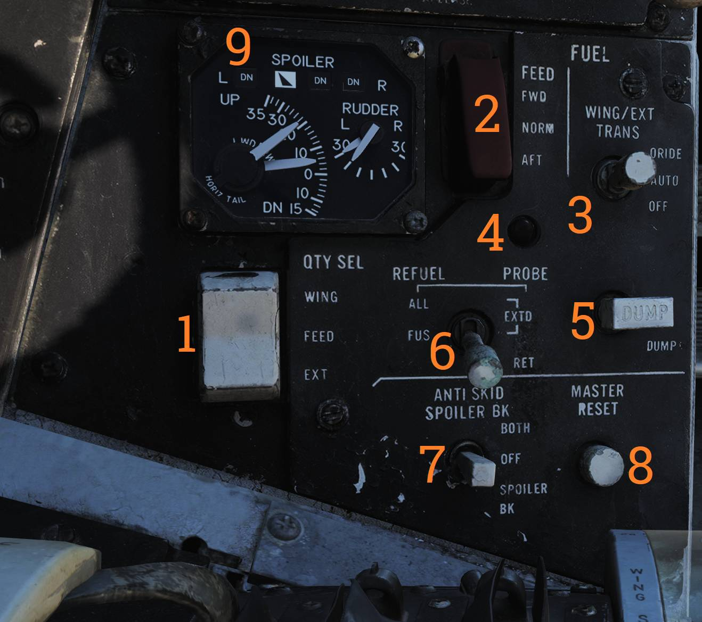
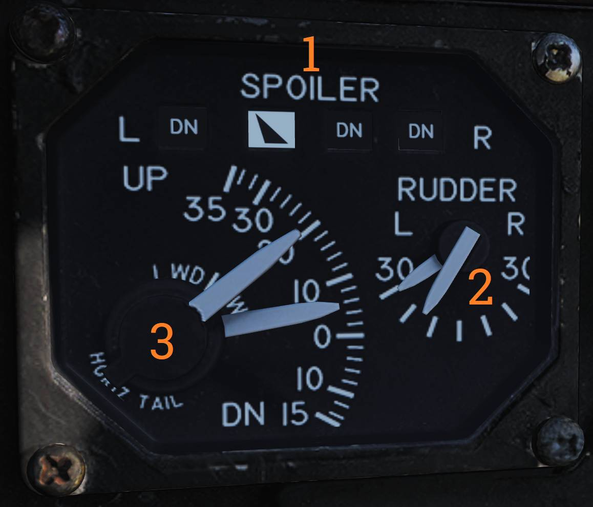
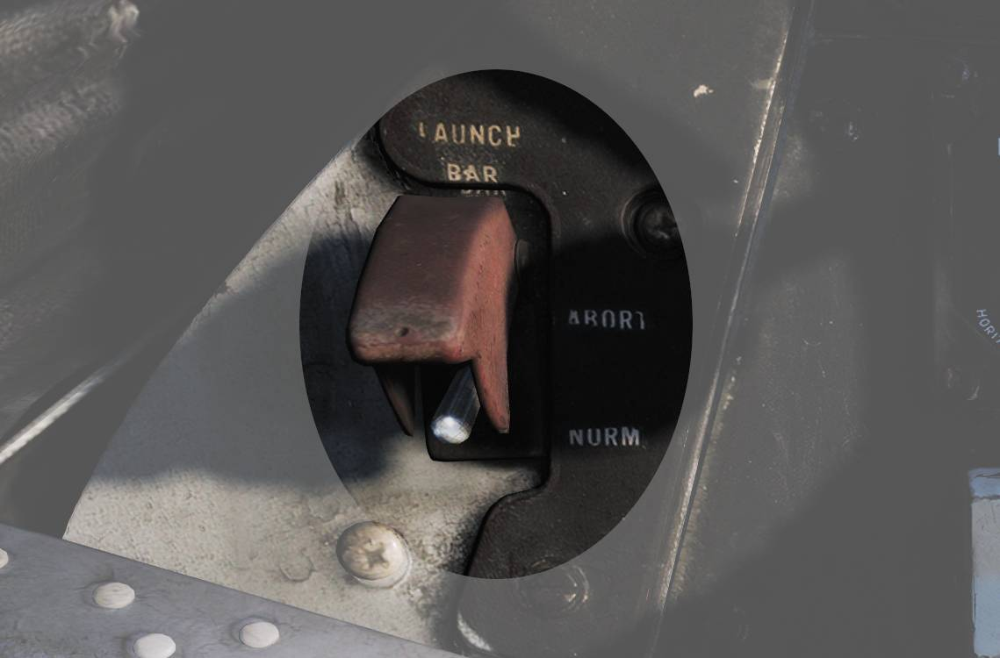
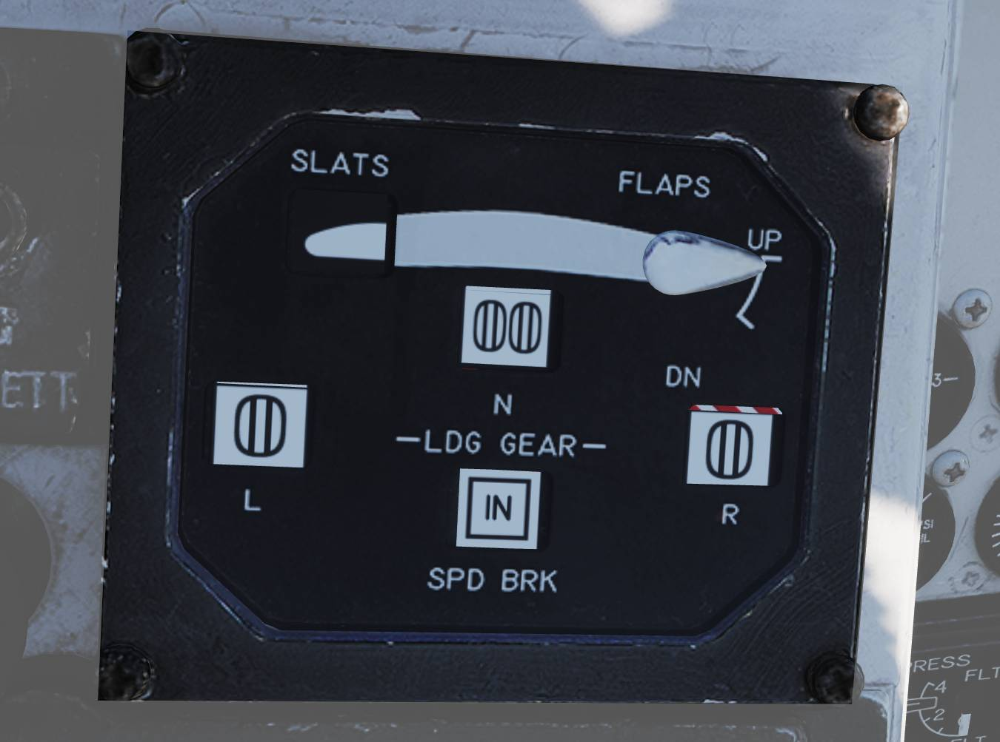
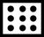
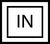

Left Vertical Console
Fuel Management Panel

Control panel for various fuel-related systems, CADC master reset, and the anti-skid system.
QTY SEL switch
Switch (
- FEED - Shows respective feed and fuselage tank fuel quantity.
- WING - Shows respective wing tank fuel quantity.
- EXT - Shows respective external fuel tank quantity.
FEED switch
Switch (
WING/EXT TRANS switch
Switch (
- ORIDE - Override.
- AUTO - Normal position.
- OFF - Turns off fuel feed from the wing and external tanks.
Refueling probe indicator light
Transition light (
DUMP switch
OFF/DUMP switch (
REFUEL PROBE switch
Selection switch (
- ALL EXTD - All extended, extends refueling probe and allows refueling of all tanks. Also resets WING/EXT TRANS switch to AUTO.
- FUS EXTD - Fuselage extended, extends refueling probe and allows refueling of only fuselage tanks.
- RET - Retracted, retracts refueling probe.
ANTI SKID SPOILER BK switch
Selection switch (
- BOTH - Enables both anti-skid and spoiler brake function with weight on wheels.
- OFF - Turns off both systems.
- SPOILER BK - Spoiler brake, enables spoiler brake function with weight on wheels.
MASTER RESET button
Button (
Control Surface Position Indicator

Indicator for indication of control surface positions.
| Indicator | Function | |
|---|---|---|
| 1 | SPOILER | Spoiler position indicators. |
| 2 | RUDDER | Rudder position indicators, shows position of left and right rudders. |
| 3 | HORIZ TAIL | Horizontal stabilizer position indicators. |
Left and right Rudder and Horizontal Tail Stabilizers are represented by symbols L and R respectively.
The Spoiler position indications are as follows:
- DN - Down, flush with wings
- Up-arrow - Extended above wing
- Down-arrow - Drooped below wing surface
Launch Bar Abort Panel

Selection switch that when held in ABORT lifts the launch bar for launch abortion. Spring-loaded to NORM (Normal) which is the standard position.
💡 Not currently used in DCS.
Landing Gear Control Panel

Control panel for the main landing gear and emergency stores jettison.
| Control/Indicator | Function | |
|---|---|---|
| 1 | LDG GEAR | Landing gear handle |
| 2 | DOWN LOCK ORIDE | Indicates weight on wheels when moved down by solenoid. |
| 3 | HYD ISOL | Switch isolating gear, nosewheel steering and brakes from the hydraulic system. |
| 4 | Transition light | Illuminates to indicate gear position not according to handle position. |
| 5 | Wheels-flaps indicator | Indicates various positions, see below for details. |
| 6 | EMERG STORES button | Emergency stores jettison. Illuminates to indicate activation when pressed. |
| 7 | NOSE STRUT switch | Switch selecting nosewheel strut retraction. |
| 8 | BRAKE-PULL handle | Parking brake, pull out to apply parking brake, push in to release. |
| 9 | EJECT CMD indicator | Indicates ejection system mode for the back seat. |
Landing Gear Handle
Selects gear UP or DOWN.
For emergency extension in DOWN position, push handle in, turn clockwise and pull out. This releases a compressed nitrogen charge for emergency extension.
Down Lock Override
Indicates weight on wheels when moved down by solenoid. Can be lifted up to override.
💡 Non-functional in DCS.
Hydraulic Isolation
Switch isolating landing gear, nosewheel steering and wheel brakes from the combined hydraulic system. Is automatically moved to T.O./LDG by LDG GEAR in DOWN position.
- FLT - In flight operation, isolates systems listed above.
- T.O./LDG - Take-off/landing, connects systems listed above, allowing them to operate.
Wheels and Flaps Position Indicator

Indicates position of flaps and slats, speed brakes, and the landing gear. The slats are indicated as follows:
| Indication | State |
|---|---|
 | Power off or maneuver slats extended. |
 | Slats extended. |
 | Slats retracted. |
Flap Position is displayed by an indicator moving between UP and DOWN. The first marked section of the indicator indicates maneuver flap-range. The landing gear is indicated as follows:
| Indication | State |
|---|---|
| Power off or unsafe gear. |
 | Gear down. |
| Gear retracted and doors closed. |
Speed brakes are indicated as follows:
| Indication | State |
|---|---|
| Speed brake system power off. |
|  | Speed brake partial extension, not in motion. |
 | Speed brake fully extended. |
|  | Speed brake retracted. |
Nose Strut Switch
Switch selecting nosewheel strut retraction.
- EXTD - Extend, extends nosewheel strut and raises and locks launch bar.
- OFF - Turns off nosewheel strut movement, spring-loaded to this position.
- KNEEL - Releases pressure from nosewheel strut to retract it, kneeling aircraft. Also unlocks launch bar.
EJECT CMD Indicator
Indicates ejection system mode for the back seat.
- PILOT - Pilot ejects both crewmembers, RIO only himself.
- MCO - Each position ejects both crewmen.